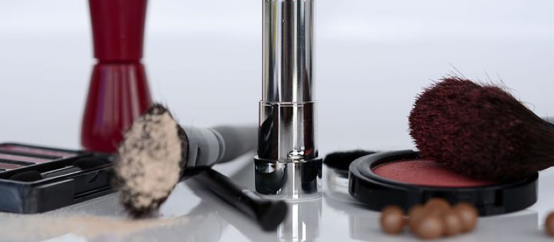
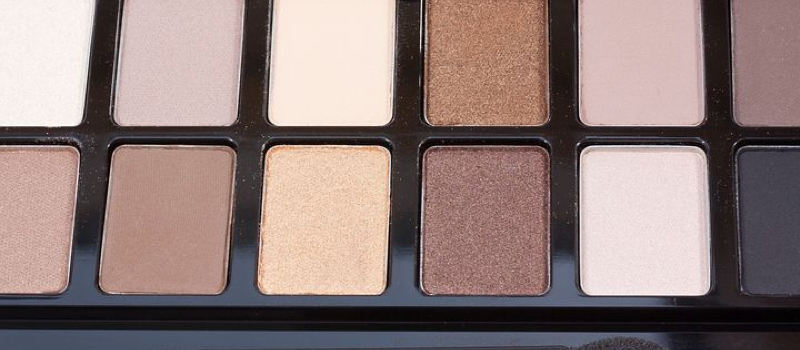

嘘～菌菌今天要给我的小仙女们表演变脸绝技，哦不，是演示卸妆水的正确使用方法，不过变脸的主角不是我，而是这款值得推荐的卸妆神器。这款卸妆液是水油分离质地的，所以不论是防水防油的彩妆都不在话下，而且不含酒精和矿物油，因此是低刺激不闷痘哒，质地清爽不糊眼，全脸用也不会很油腻哦～说了那么多快戳大图看变脸吧。
咻咻！今天菌菌要表演变脸…哦不…卸妆绝技，用到的是我很喜欢的牌子，水油分离卸妆液，不管是防水还是防油的彩妆，这种水油分离的质地卸妆液统统可以卸得很干净。 这款卸妆液很厉害的一点就是不添加酒精和矿物油，不刺激不闷痘还很滋润且不油腻。
接下来我就要开始卸妆变脸啦~
咻咻！今天菌菌要表演变脸…哦不…卸妆绝技，用到的是我很喜欢的牌子，水油分离卸妆液，不管是防水还是防油的彩妆，这种水油分离的质地卸妆液统统可以卸得很干净。 这款卸妆液很厉害的一点就是不添加酒精和矿物油，不刺激不闷痘还很滋润且不油腻。